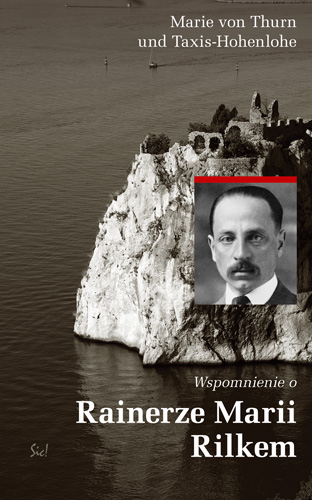
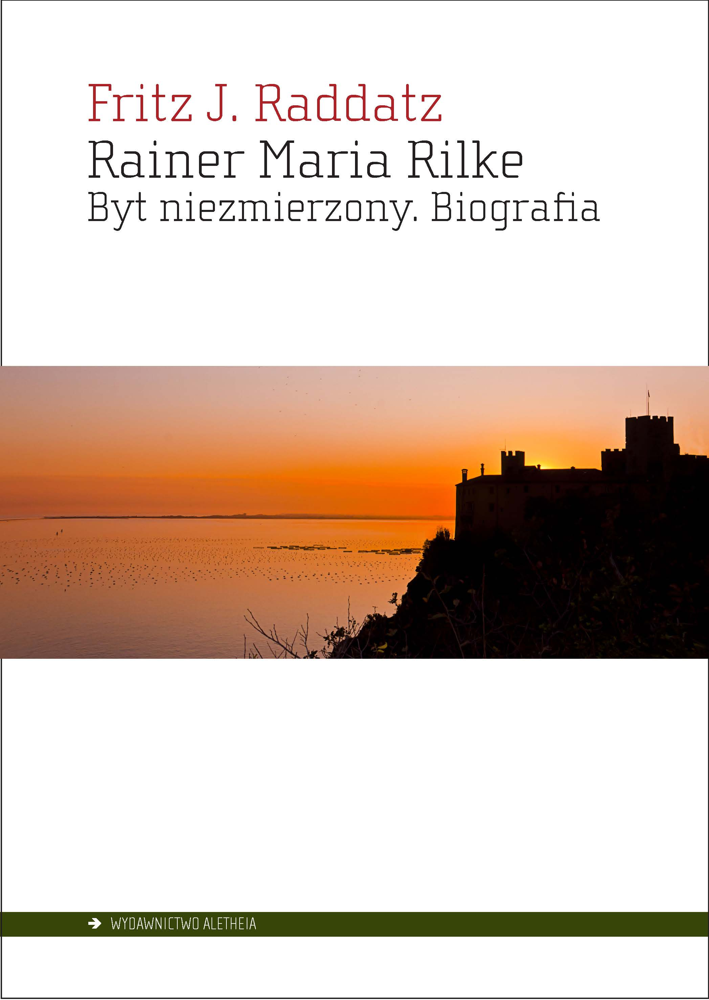

Biografie i wspomnienia
Donald A. Prater
Dźwięczące szkło. Rainer Maria Rilke. Biografia
A Ringing Glass. The Life of Rainer Maria Rilke
przeł. Dariusz Guzik
Prószyński i S-ka 2004

Angielski dyplomata i germanista Donald A. Prater stworzył najlepszą i najdokładniejszą biografię Rilkego, jaką kiedykolwiek napisano i jaką, wedle słów krytyki, „można sobie w ogóle wyobrazić”. Podobną opinię wyraził w korespondencji z tłumaczem wydania polskiego wnuk poety Christoph Sieber-Rilke.
Głównymi atutami książki są niezwykła rzetelność i bezstronność autora. Dzięki starannemu doborowi materiałów źródłowych, po części dotychczas niedostępnych, Prater zdołał w sposób dokładny i pełny przedstawić życie poety, a niektóre jego epizody ukazać w całkiem nowym świetle: trudne relacje z matką, rzeczywiste przeżycia w szkole wojskowej, podróże do Rosji w towarzystwie Lou Andreas-Salomé, śmiertelną chorobę przeżywaną w bólu, lecz z godnością, wreszcie jego ambiwalentny stosunek do kobiet, który stał się źródłem rozmaitych spekulacji. Biograf opisuje także liczne podróże Rilkego, przedstawia jego przeżycia, nastroje, „drgnienia duszy” poety, które znalazły później odzwierciedlenie w jego utworach. Dokumentuje również — odwołując się do bogatej korespondencji poety — zainteresowanie Rilkego różnymi prądami literackimi, dyskusje i wymianę poglądów ze współczesnymi pisarzami i artystami. Biografia ta jest znakomitym punktem wyjścia do zrozumienia poezji Rilkego. Jest to zarazem pasjonująca opowieść o barwnej epoce, która odeszła bezpowrotnie.
Czy musimy znać życie osobiste poety? Czyż nie miał racji Orwell, twierdząc, iż sfera prywatności pisarza ma niewiele wspólnego z jego twórczością literacką?
Można, rzecz jasna, czytać i podziwiać utwory Rainera Marii Rilkego, być może największego geniusza liryki w naszym stuleciu — jego „Elegie duinejskie”, „Sonety do Orfeusza”, „Pamiętniki Malte Lauridsa Brigge” czy w szczególności „Nowe poezje” — traktując je jako samoistne dzieła sztuki, niepowiązane w jakikolwiek sposób z życiem ich autora. Można również sądzić, iż niepotrzebna jest pełna znajomość jego losów – wystarczy wiedzieć, że urodził się w Pradze w roku 1875, tworzył w języku niemieckim, po części także francuskim, przemierzył całą Europę i zmarł w Szwajcarii w roku 1926.
Wszelako sam Rilke uświadamiał sobie, iż jego twórczość jest ściśle spleciona z historią jego życia. Świadczy o tym dbałość, z jaką przechowywał swe papiery i notatki, oraz szczególny zapis, dokonany w testamencie — zgoda na publikację listów, którym powierzył tak wiele własnych myśli i doznań. Nie mogło stać się inaczej; Rilke był bowiem rzadkim przykładem poety, który potrafił wieść życie oddane wyłącznie sztuce, ba, który ze swego życia uczynił w istocie dzieło sztuki. Jeśli zatem chcemy dokonać pełnej oceny jego twórczości, nie możemy pominąć okoliczności, w jakich rodziło się poetyckie słowo — osobistych perypetii, misères et grandeurs, kryzysów egzystencjalnych, nade wszystko jednak związków z ludźmi, które pozostawiły niezatarte piętno na osobowości artysty. Utwory Rilkego tchną tak niezwykłą magią pióra, iż musimy poznać człowieka, który stał się pióra tegoż magiem.
Marie von Thurn und Taxis
Wspomnienie o Rainerze Marii Rilkem
Die Erinnerungen an Rainer Maria Rilke
przeł. Dariusz Guzik
Wydawnictwo Sic! 2010

Po śmierci Rainera Marii Rilkego, „niezrównanego poety i drogiego, wiernego przyjaciela”, księżna Marie von Thurn und Taxis pragnęła utrwalić na papierze swe wspomnienia, „wspomnienia tak drogie memu sercu i być może również tym, którzy znali i darzyli uczuciem tego nieodżałowanego, przedwcześnie zmarłego człowieka”. Tak oto narodziła się niniejsza książka, opublikowana po raz pierwszy w roku 1932, a następnie nakładem wydawnictwa Insel w eleganckiej formie słynnej serii Insel-Bücherei (nr 888).
Autorka czerpała obficie z własnoręcznych zapisków, redagowanych w języku niemieckim i francuskim, jakie zapełniały karty jej dzienników. „Wspomnienie” księżnej Taxis to nie tylko zajmująca historia łączącej ich przyjaźni oraz subtelny portret jednego z najznamienitszych poetów języka niemieckiego, lecz również fascynujący obraz zamierzchłej epoki, owego przebrzmiałego „świata wczorajszego”.
W czerwcu roku 1922 udałam się do Sierre na spotkanie z Rainerem Marią Rilkem; mieszkający w Muzot poeta pragnął przeczytać mi swe Elegie, które rozpoczął pisać w roku 1912 w Duino i ukończył dopiero po dziesięciu długich latach.
Dlaczego nie potrafiłam podówczas zrozumieć, iż był to człowiek zaślubiony śmierci… Czyż kiedykolwiek widziałam bardziej promienne oblicze, czy wsłuchiwałam się w słowa skrzące się milszą błogością? Odniosłam wrażenie, że poznał on tajemnicę życia; radość i cierpienie, pomyślność i nieszczęście, życie i śmierć — wszystko uznał za właściwe, wszystko przyjął z aprobatą, pełen niewymownej radości odnalazł dla wszystkiego zrozumienie. Ja zaś, kiedy spoglądałam na niego i słuchałam jego głosu, odczułam głębokie wzruszenie, widząc, jak tę twarz, poddaną zazwyczaj bezbrzeżnej melancholii, opromienia szczęście.
Winnam była wówczas zrozumieć, iż poeta sięgnął szczytu, wspiął się na najwyższy wierzchołek i spojrzał w oblicze Boga — a potem miał przed sobą już tylko śmierć.
Jako że śmierć nadeszła i zabrała nam niezrównanego poetę tudzież drogiego i oddanego przyjaciela, pragnę oto spisać moje własne wspomnienie o nim, wspomnienie tak drogie memu sercu i być może również tym, którzy znali i darzyli uczuciem tego nieodżałowanego, przedwcześnie zmarłego człowieka.
Na kartach moich dzienników odnajduję notatki, skreślone po niemiecku, przeważnie jednak po francusku, nierzadko jeszcze tego samego dnia. Przepisuję je w brzmieniu nieomal dosłownym, poczynając od wspomnienia naszego pierwszego spotkania w Paryżu w grudniu roku 1909.
Owszem, znałam już wówczas większość jego publikacji, dużo też o nim usłyszałam z ust naszego wspólnego przyjaciela, dr. Rudolfa Kassnera. Pewnego wieczoru w Wiedniu Kainz deklamował jego wiersze, które uczyniły na mnie przejmujące wrażenie. Wiedziałam, że Rilke przebywa w Paryżu, słyszałam także o uwielbieniu, jakim darzył comtesse de Noailles, którą pewnego razu spotkał był przelotnie w atelier Rodina…
Tekst „Wspomnienia” pióra księżnej Taxis, poprzedzony słowem wstępnym tłumacza, publikowany był we fragmentach w kolejnych numerach czasopisma Topos (numery 1-2 (92-93) 2007, 3 (94) 2007, 4 (95) 2007, 5 (96) 2007 oraz 6 (97) 2007). Wydanie książkowe (Sic! 2010) zawiera, oprócz słowa wstępnego, także obszerne przypisy tłumacza.
Fritz Raddatz
Rainer Maria Rilke. Byt niezmierzony. Biografia
Rainer Maria Rilke. Überzähliges Dasein. Eine Biographie
przeł. Dariusz Guzik
Wydawnictwo Aletheia 2019

Fritz J. Raddatz, znakomity niemiecki publicysta, kreśli wspaniały portret światowej sławy poety Rainera Marii Rilkego, w subtelny sposób przeplatając opowieść o życiu analizą jego twórczości.
Mimo liczącej sobie już ponad sto lat recepcji twórczości Rainera Marii Rilkego w Polsce oraz bogatej tradycji polskich przekładów utworów poety, na polskim rynku wydawniczym nie ukazała się dotąd publikacja o zbliżonym charakterze. Książka Fritza J. Raddatza to bowiem z jednej strony opowieść biograficzna, odkrywająca przed czytelnikiem koleje losu znamienitego artysty, z drugiej zaś bogactwo refleksji o charakterze krytycznoliterackim, uwzględniających najnowsze publikacje z bogatej biblioteki analiz twórczości Rilkego. Ponadto, ukazując dzieło poety na tle epoki i nurtujących w niej prądów literackich, autor unaocznia ich doniosłość oraz prekursorski (jak w przypadku Maltego) charakter. Dlatego książka Raddatza będzie cenną publikacją nie tylko dla czytelników pragnących poznać biografię Rilkego, lecz także dla zainteresowanych oceną krytycznoliteracką jego artystycznego dorobku.
Rilke jest drugim po Goethem najchętniej czytanym poetą niemieckojęzycznym na świecie. Współcześni sławili go i zeń szydzili; do dziś opinie o Rilkem i jego twórczości są podzielone. Kim był? „Uszminkowaną białogłową”, jak drwił Georg Heym, czy może raczej „czystą poezją lub tym, z czego poezja się rodzi”, jak pisała zafascynowana nim Marina Cwietajewa? Wychowywany w pierwszych latach życia jak dziewczynka, wydany na pastwę bigoterii swojej matki, Rilke wykształcił w sobie bardzo ambiwalentny stosunek do płci pięknej. To właśnie kobietom będzie ten gnany z miejsca na miejsce tułacz zawdzięczał wsparcie i pomoc; one zaś otrzymają w zamian najpiękniejsze wiersze, listy i dedykacje. A jednak kobieta, podobnie jak świat, pozostanie dla poety wrogiem, adorowana z oddali, z bliska postrzegana jako zagrożenie… Fritz J. Raddatz zdołał nie tylko w sposób błyskotliwy i poruszający opisać charakter Rilkego, kształtujący całą jego egzystencję, lecz także nakreślić wpływ owych emocjonalnych źródeł na jego poetyckie dzieło.
O autorze
Fritz J. Raddatz, urodzony w roku 1931 w Berlinie, ceniony eseista, felietonista i prozaik, w latach 1960–1969 wicedyrektor wydawnictwa Rowohlt, 1977–1985 szef działu felietonów pisma „Die Zeit”, od roku 1969 prezes Kurt-Tucholsky-Stiftung, wydawca Dzieł zebranych Tucholsky’ego, jest autorem przetłumaczonych na wiele języków powieści oraz licznych publikacji o charakterze eseistyczno-biograficznym, m.in. znakomitej biografii Gottfrieda Benna. W roku 2003 ukazała się jego wyrazista autobiografia Unruhestifter. Erinnerungen.
Z opinii o książce
Raddatz kreśli wizerunek subiektywny, aczkolwiek oparty na materiale naukowym, portret wewnętrznego Rilkowskiego świata, który pod wieloma względami pozostawał w sprzeczności z rzeczywistością. Raddatz potrafi przekonać czytelnika do swego entuzjazmu dla tego znamienitego, upartego i po części zapoznanego poety.
Claudia von Dehn, Hessische/Niedersächsische Allgemeine
Błyskotliwy tekst, hołd o wielkiej przenikliwości, portret człowieka pełnego sprzeczności, studium ukazujące samotnika, skupione na jego życiu wewnętrznym, poruszające również kwestię radykalnych niekiedy (przywodzących na myśl Tucholsky’ego) poglądów politycznych Rilkego. Raddatz nie pragnie rozwiązać ostatniej zagadki, lecz raczej rozbudzić zamiłowanie do zajmowania się tym poetą. Rozprasza mgły, jakie spowijają jego postać, sprowadza ją z wyżyn, na jakie wyniósł ją zachwyt potomności, z powrotem na ziemię, i nie przestaje, przy całym swym braku respektu dla poety, podziwiać go za bogactwo słowa i metaforyki. Trudno wyobrazić sobie piękniejszy i bardziej entuzjastyczny portret Rilkego.
Klaus Bellin, LESART
Miast biografii wybitny krytyk literacki Fritz J. Raddatz przedstawił esej biograficzny — rezultat trwającego przez całe życie dialogu z autorem, który w sposób irytujący oscylował pomiędzy ugrzecznieniem a najwyższymi ambicjami artystycznymi. Mamy zatem do czynienia z zajmującą książką, która wprawdzie nie opowiada o życiu poety we wszelkich jego szczegółach, daje za to wejrzenie w struktury, które charakteryzują zarówno życie, jak i dzieło jednej z najbardziej zagadkowych postaci dziejów niemieckiej literatury. To Rilke na nasze czasy.
Tilman Krause, Deutsche Welle
Raddatz pisze jasno, wyraziście, uroczo i starannie. Wie, jak obszerna jest już Rilkeańska biblioteka, stąd unika pokusy interpretacyjnej. Raddatz nigdy nie traci z pola widzenia całej postaci Rilkego, niczym całościowego dzieła sztuki.
Michael Hametner, MDR Figaro
Poznałem innego człowieka, krnąbrnego, przeklinającego Boga. Wszelako w centrum mojego zainteresowania pozostaje zawsze „przeorywanie” dzieła — innymi słowy: próba zrozumienia, dlaczego z rozmaitych doświadczeń biograficznych i egzystencjalnych powstaje to czy tamto dzieło. Analizując sytuacje życiowe — czasem szczęśliwe, czasem nieszczęśliwe, czasem pełne sprzeczności — chciałbym dzieło to zrozumieć na nowo. Dzisiejszy czytelnik musi sobie na przykład uświadomić, iż Rilke był także autorem opinii i sądów o charakterze politycznym. Jego anty-wilhelminizm cechowała wyrazista ostrość: można by pomyśleć, że czyta się Tucholsky’ego.
Heiko Kammerhoff, wywiad z Fritzem J. Raddatzem, Szene Hamburg